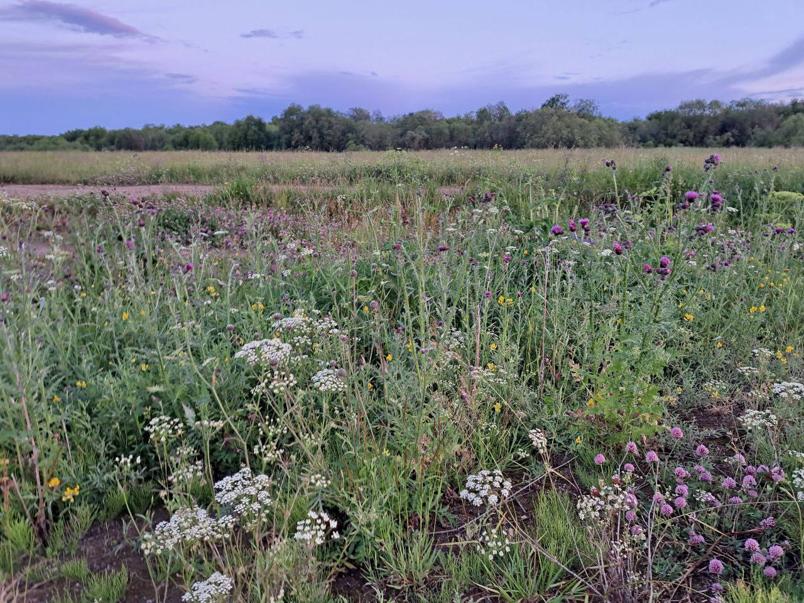
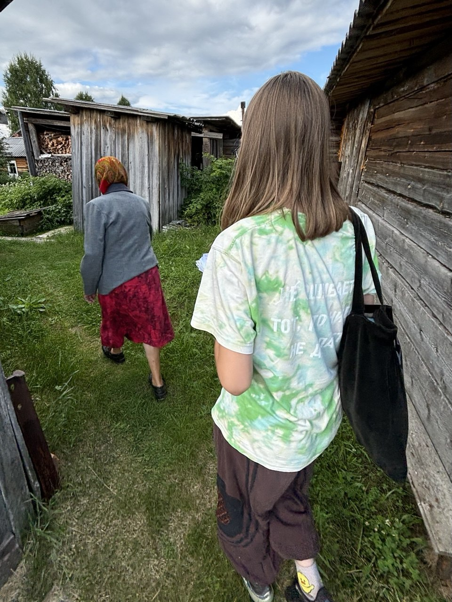
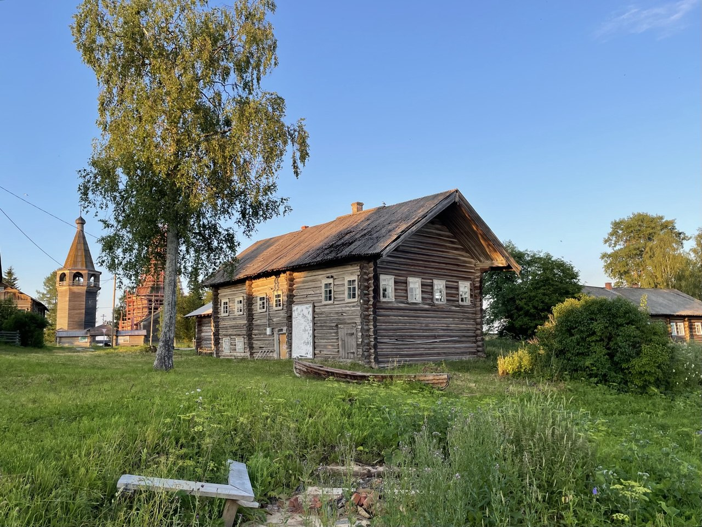

Обо мне
- 3 года в школе в Пироговском
- 1 год на домашнем обучении)
- 1 год в мытищинской гимназии
- 4 года в 179 школе (в изобретательских классах)
- 1 год в ЦПМе
- и 1 год в 179 (опять)!
Шесть раз переходила в пять разных школ
Фундаментальная и прикладная лингвистика, НИУ ВШЭ, Москва
Мои увлечения
- в Дагестан
за полярный круг на п-ов Таймыр
в Тыву
на Камчатку
- Веня Д'ркин
- Михаил Щербаков
Несколько лет занималась геологией и даже была в экспедициях, где мы добывали минералы и палеонтологические образцы, живя по 30-40 дней вне цивилизации!)
И ещё я играю на гитаре!
Мой любимый музыкальный жанр - бардовская песня.Больше всего слушаю этих исполнителей:
Помимо этого, мне интересна диалектология. Была в трёх экспедициях в Архангельскую область.
-
Забавно, что в каждую из этих поездок я попала разными способами: первая была организована преподавательницей русского языка из моей школы; вторая... мной(?))) мне было не с кем ехать, и я позвала знакомых лингвистов с собой; а третья была под руководством И.Б. Качинской.

Июль 2023
ПИН Штв, Вмш

Июль 2024
ПИН Ср

Июль 2025
КАРГ Ош
 Vk
Vk  Telegram
Telegram  Почта: amusenko@edu.hse.ru
Почта: amusenko@edu.hse.ru